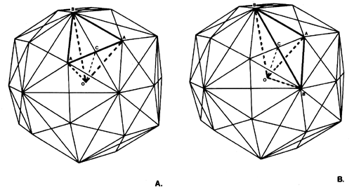

Fig. 986.419 T Quanta Modules within Rhombic Triacontahedron: The 120 T Quanta Modules can be grouped two different ways within the rhombic triacontahedron to produce two different sets of 60 tetrahedra each: 60 BAAO and 60 BBAO.
Copyright © 1997 Estate of R. Buckminster Fuller